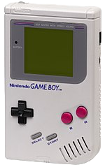
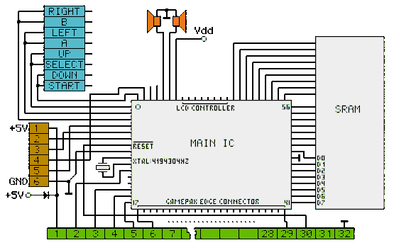

Nintendo GameBoy (TM) emulator
Abstract
The main goal of this project is to develop a large C program focusing on the "system" aspect. The framework chosen is the simulation of the GameBoy (TM) of Nintendo (R).
The first Game Boy console, launched in Japan in 1989, looked like this:

It had a greenish screen of 144 lines of 160 pixels in 4 shades of "gray" and 6 control buttons (A, B and 4 directions). The original Game Boy and its successive updates (with colors) sold nearly 120 million copies worldwide. The most popular games at the time were :
This project almost completely simulates all the features of the original Game Boy. The simulator will allow you to go back in time (yes, yes!) and play some of the above mentioned games from their real code (copy of the contents of their cartridge from the time)!
Goals
Like any game console, the Game Boy is a small computer. Its main components are :
- the processor (8-bit SHARP LR35902, a hybrid between Intel 8080 and Zilog Z80, working at a clock frequency of only 4.194304 MHz);
- 8 KiB internal S-RAM
- 8 KiB internal Video RAM
- a 2.6 inch reflective super-twisted nematic (STN) liquid-crystal display (LCD) and its controller, a simple graphic processor
- a sound synthesizer (which is not be simulated in this project).
- the keyboard, with a total of eight buttons :
- four direction buttons (up, down, left, right), organized in a directional cross
- four action buttons (A, B, Start, Select)
The figure below illustrates the architecture of the Game Boy.

The Game Boy contains --- with one small exception --- no programs. Therefore, games are distributed in the form of "cartridges", which are plastic cases containing a read-only memory containing the game program and its data (graphics, sounds, etc.). When a cartridge is inserted into the Game Boy, its ROM is physically connected to the rest of the system, and the game it contains is played as soon as the system is turned on.
The architecture of the emulation program will follow, in broad outline, the hardware architecture of the Game Boy. Thus, each of the components mentioned above --- except for the sound synthesizer --- will be modeled by a corresponding C module (structure, functions).
The solution chosen for this emulator is a "functional" simulation that faithfully simulates only those aspects of the Game Boy that are explicitly described in Nintendo's official documentation (rather than simulating every single hardware component). Such a level of simulation is simpler but has a drawback: some specific hardware features that are not described, but which programmers of some games have nevertheless taken advantage of, are not simulated and it will therefore not be possible to run such games on this simulator.
General description
Here is a description in a general way of the main concepts and data structures that this project relies upon.
Concretely, the components to be simulated will be :
- the arithmetic-logic unit (ALU) ;
- the memory and the bus
- the CPU and its registers ;
- the game cartridges ;
- the timer ;
- the LCD screen ;
- the LCD controller ;
- the images representation.